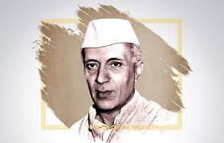
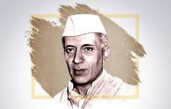

Jawaharlal Nehru
 

Pt. Jawaharlal Nehru was born in Allabahad on November 14, 1889. He received his early education at home under private tutors. At the age of fifteen, he went to England and after two years at Harrow, joined Cambridge University where he took his tripos in Natural Sciences. He was later called to the Bar from Inner Temple. He returned to India in 1912 and plunged straight into politics. Even as a student, he had been interested in the struggle of all nations who suffered under foreign domination. He took keen interest in the Sinn Fein Movement in Ireland. In India, he was inevitably drawn into the struggle for independence.
In 1912, he attended the Bankipore Congress as a delegate, and became Secretary of the Home Rule League, Allahabad in 1919. In 1916 he had his first meeting with Mahatma Gandhi and felt immensely inspired by him. He organised the first Kisan March in Pratapgarh District of Uttar Pradesh in 1920. He was twice imprisoned in connection with the Non-Cooperation Movement of 1920-22.\
Pt. Nehru became the General Secretary of the All India Congress Committee in September 1923. He toured Italy, Switzerland, England, Belgium, Germany and Russia in 1926. In Belgium, he attended the Congress of Oppressed Nationalities in Brussels as an official delegate of the Indian National Congress. He also attended the tenth anniversary celebrations of the October Socialist Revolution in Moscow in 1927. Earlier, in 1926, at the Madras Congress, Nehru had been instrumental in committing the Congress to the goal of Independence. While leading a procession against the Simon commission, he was lathi-charged in Lucknow in 1928. On August 29, 1928 he attended the All-Party Congress and was one of the signatories to the Nehru Report on Indian Constitutional Reform, named after his father Shri Motilal Nehru. The same year, he also founded the ‘Independence for India League’, which advocated complete severance of the British connection with India, and became its General Secretary.